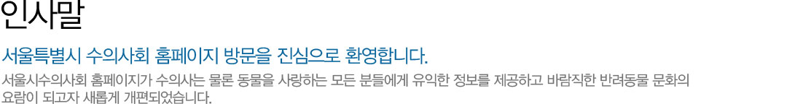
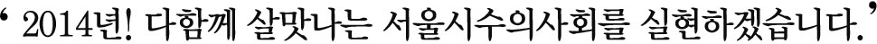
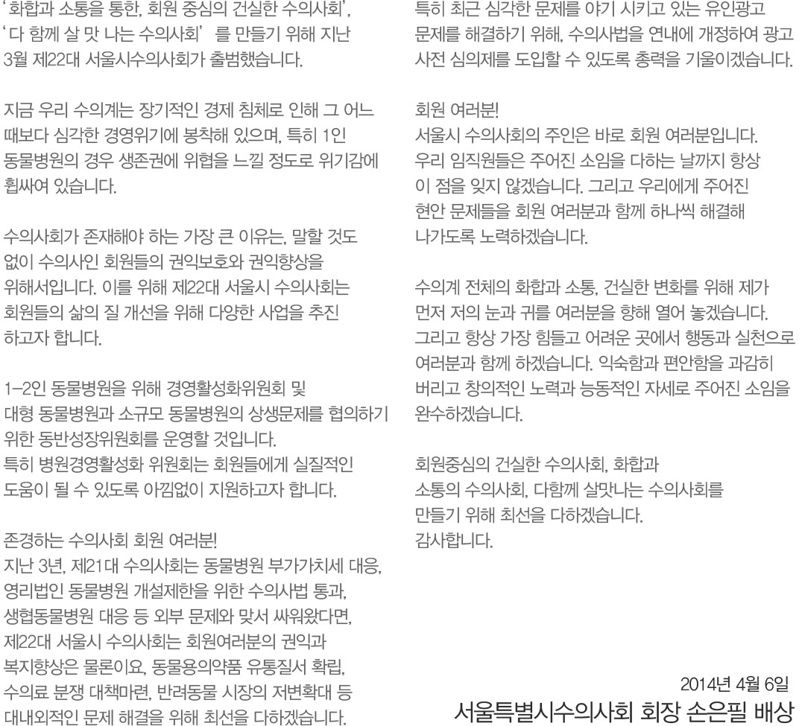
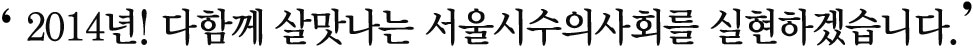

인사말
서울특별시 수의사회 홈페이지 방문을 진심으로 환영합니다.
서울시수의사회 홈페이지가 수의사는 물론 동물을 사랑하는 모든 분들에게 유익한 정보를 제공하고 바람직한 반려동물 문화의 요람이 되고자 새롭게 개편되었습니다.

화합과 소통을 통한, 회원 중심의 건실한 수의사회', 다 함께 살 맛 나는 수의사회'를 만들기 위해 지난 3월 제22대 서울시수의사회가 출범했습니다.
지금 우리 수의계는 장기적인 경제 침체로 인해 그 어느 때보다 심각한 경영위기에 봉착해 있으며, 특히 1인 동물병원의 경우 생존권에 위협을 느낄 정도로 위기감에 휩싸여 있습니다.
수의사회가 존재해야 하는 가장 큰 이유는, 말할 것도 없이 수의사인 회원들의 권익보호와 권익향상을 위해서입니다. 이를 위해 제22대 서울시 수의사회는 회원들의 삶의 질 개선을 위해 다양한 사업을 추진 하고자 합니다.
1-2인 동물병원을 위해 경영활성화위원회 및 대형 동물병원과 소규모 동물병원의 상생문제를 협의하기 위한 동반성장위원회를 운영할 것입니다. 특히 병원경영활성화 위원회는 회원들에게 실질적인 도움이 될 수 있도록 아낌없이 지원하고자 합니다.
존경하는 수의사회 회원 여러분! 지난 3년, 제21대 수의사회는 동물병원 부가가치세 대응, 영리법인 동물병원 개설제한을 위한 수의사법 통과, 생협동물병원 대응 등 외부 문제와 맞서 싸워왔다면, 제22대 서울시 수의사회는 회원여러분의 권익과 복지향상은 물론이요, 동물용의약품 유통질서 확립,
수의료 분쟁 대책마련, 반려동물 시장의 저변확대 등 대내외적인 문제 해결을 위해 최선을 다하겠습니다.
특히 최근 심각한 문제를 야기 시키고 있는 유인광고 문제를 해결하기 위해, 수의사법을 연내에 개정하여 광고 사전 심의제를 도입할 수 있도록 총력을 기울이겠습니다.
회원 여러분! 서울시 수의사회의 주인은 바로 회원 여러분입니다. 우리 임직원들은 주어진 소임을 다하는 날까지 항상 이 점을 잊지 않겠습니다. 그리고 우리에게 주어진 현안 문제들을 회원 여러분과 함께 하나씩 해결해 나가도록 노력하겠습니다.
수의계 전체의 화합과 소통, 건실한 변화를 위해 제가 먼저 저의 눈과 귀를 여러분을 향해 열어 놓겠습니다. 그리고 항상 가장 힘들고 어려운 곳에서 행동과 실천으로 여러분과 함께 하겠습니다. 익숙함과 편안함을 과감히
버리고 창의적인 노력과 능동적인 자세로 주어진 소임을 완수하겠습니다.
회원중심의 건실한 수의사회, 화합과 소통의 수의사회, 다함께 살맛나는 수의사회를 만들기 위해 최선을 다하겠습니다.
감사합니다.
2014년 4월 6일
서울특별시수의사회 회장 손은필 배상